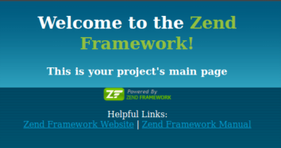
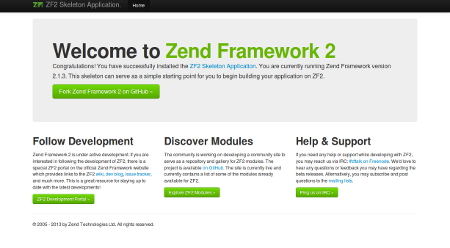

Zend-Framework
Dieser Artikel wurde für die folgenden Ubuntu-Versionen getestet:
Dieser Artikel ist größtenteils für alle Ubuntu-Versionen gültig.
Zum Verständnis dieses Artikels sind folgende Seiten hilfreich:
Das Zend-Framework ist ein objektorientiertes Framework für Web Anwendungen für die Programmiersprache PHP5. Die Besonderheit des Frameworks liegt darin, dass es viele vorgefertigte Komponenten enthält, die unabhängig voneinander eingesetzt werden können. Für fortgeschrittene Anwendungsfälle ermöglicht es die Implementierung anhand einer Model-View-Controller-Struktur (MVP).
Hinweis:
Installation¶
Hinweis:
Die Installation über die Paketquellen von Ubuntu funktioniert derzeit nur mit der Zend Framework Version 1, die nur noch voraussichtlich bis Anfang 2014 mit Sicherheitsupdates versorgt werden wird. Die Installation des aktuellen Zend Framework 2 kann aber einfach über Git erfolgen. Siehe Abschnitt Zend Framework 2.
Das Zend-Framework ist direkt in den Paketquellen von Ubuntu enthalten. Über die Paketverwaltung [1] lässt sich das Framework inklusive aller zugehörigen Pakete installieren. Benötigt wird folgendes Paket:
zend-framework
 mit apturl
mit apturl
Paketliste zum Kopieren:
sudo apt-get install zend-framework
sudo aptitude install zend-framework
Das Zend Framework benötigt das Apache Modul mod_rewrite. Falls nicht bereits geschehen, sollte es aktiviert werden.
Einrichtung¶
Damit das Framework von PHP erkannt wird und verwendet werden kann, müssen die beiden folgenden Dateien editiert [3] werden:
/etc/php/7.0/apache2/php.ini
/etc/php/7.0/mods-available/zend-framework.ini
Als erstes muss das Zend-Framework in der /etc/php5/apache2/php.ini verlinkt werden. Dafür ändert man die Zeile
1 | ;include_path = ".:/usr/share/php"
|
in
1 | include_path = ".:/usr/share/php" |
Anschließend gibt man den Arbeitspfad zum Framework in der Datei /etc/php/7.0/mods-available/zend-framework.ini an, indem man die Zeile
1 | ; include_path=${include_path} ":/usr/share/php/libzend-framework-php"
|
in
1 | include_path=${include_path} ":/usr/share/php/libzend-framework-php" |
ändert.
Im Anschluss daran wird der Webserver neu gestartet. Von nun an arbeitet der Webserver mit dem Zend-Framework. Webseiten und PHP-Dateien, die das Zend-Framework nutzen, können im Verzeichnis /var/www/ abgelegt werden.
Funktionstest¶
Um zu überprüfen, ob das Zend-Framework auch wirklich funktioniert, erstellt man im Terminal [2] ein erstes Projekt. Dafür wechselt man zunächst in das richtige Projektverzeichnis /var/www/ mit dem Befehl:
cd /var/www/
Anschließend erstellt man ein neues Zend-Projekt:
zf create project NeuesProjekt
Nun öffnet man z.B. in Firefox die URL zum neuen Projekt:
http://localhost/NeuesProjekt/public
Hinweis:
Wurde ein öffentlicher Webserver eingerichtet, so ist localhost entsprechend durch die IP des Servers zu ersetzen !
Jetzt sollte man nach einer erfolgreichen Installation und Konfiguration durch das folgende Willkommensfenster begrüßt werden:

Zend Framework 2¶
Am 6. August 2010 wurde das erste Development Release von Zend Framework 2.0 veröffentlicht. Inzwischen empfehlen die Entwickler von Zend Framework für (neue) Projekte ZF2 zu verwenden, da diese bereits als stabil gilt. Zend Framework 1 soll noch bis mindestens Anfang 2014 mit Updates versorgt werden.
Da Zend Framework 2 (noch nicht) in den Paketquellen von Ubuntu enthalten ist, kann es wie folgt installiert werden:
Hinweis:
Die Voraussetzungen für Zend Framework 2 sind wie für Zend Framework 1: Apache als Webserver mit mod_rewrite und PHP5 (5.3.3 oder höher).
Sicherstellen, dass der Apache-Server .htaccess Dateien unterstützt. Dies kann man einstellen, indem man in der Datei /etc/apache2/sites-available/default die Zeile AllowOverride von:
1 2 3 4 5 | <Directory /var/www/> ... AllowOverride None ... </Directory> |
in:
1 2 3 4 5 | <Directory /var/www/> ... AllowOverride FileInfo ... </Directory> |
abändert. Anschließend Apache neu starten
sudo service apache2 restart
Ins Verzeichnis wechseln, in welches das neue ZF2-Projekt entstehen soll, z.B. /var/www.
git clone git://github.com/zendframework/ZendSkeletonApplication.git cd ZendSkeletonApplication php composer.phar self-update php composer.phar install
Oder:
git clone git://github.com/zendframework/ZendSkeletonApplication.git --recursive
Diese Befehle erstellen eine sogenannte "Skeleton Application", also alle notwendigen Verzeichnisse und Dateien, die man für eine neues ZF2-Projekt benötigt. Ebenso wird die komplette ZF2-Bibliothek im Verzeichnis vendor/zendframework/zendframework/library/Zend des neu erstellten Projektes erstellt.
Das neue Projekt wurde automatisch in einem neuen Ordner namens /ZendSkeletonApplication erstellt, den man nach Belieben umbenennen kann.
Wenn alles erfolgreich eingerichtet wurde, erscheint folgende Oberfläche auf der Startseite des frischen Projektes: 


- Erstellt mit Inyoka
-
 2004 – 2017 ubuntuusers.de • Einige Rechte vorbehalten
2004 – 2017 ubuntuusers.de • Einige Rechte vorbehalten
Lizenz • Kontakt • Datenschutz • Impressum • Serverstatus -
Serverhousing gespendet von